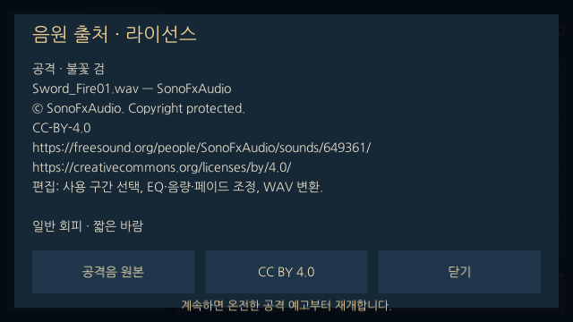
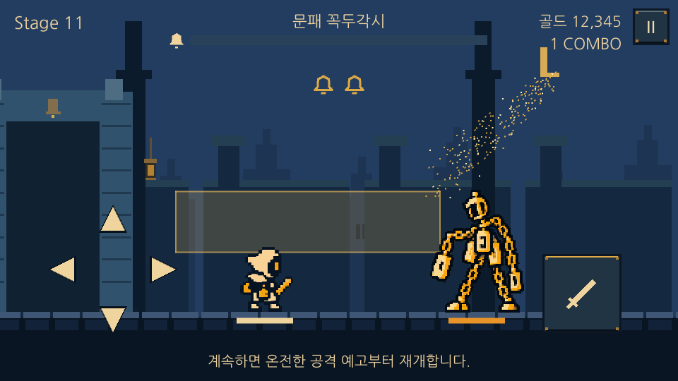
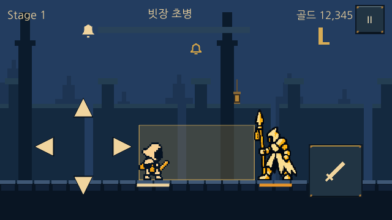

LAST BELL / DESIGN v7 / 2026.10.23
돌파의 무게,
손에 닿는 전투
강화 비용·별점 성장·적 능력치·유물 선택·모바일 입력·프롤로그를 한 번에 조정한다. 실제 플레이 범위는 최신 v6의 1–20스테이지를 유지한다. 21–50 수치는 확장 기획이며, 미제작 전장을 플레이에 추가하지 않는다.
추가 반영 · 공격·일반 회피·피격 효과음
공격은 사용자 선정 Sword_Fire01.wav — SonoFxAudio (CC BY 4.0). 일반 회피는 Swosh / Whoosh / Air Cut — qubodup (CC0), 피격은 Impact: Smack Body — Philipp Grzemba / Sheyvan (CC0). 공격 명중 시 불꽃 검, 일반 회피 성공 시 짧은 바람, 실제 피격 시 몸 충격음을 재생한다. 적 무기/충돌음은 별도 슬롯으로 유지하며 완벽 회피는 기존 종소리를 쓴다.
공개 HQ MP3 미리듣기를 편집·변환한 파일이며 무손실 원본은 아니다. 원본 페이지·원본 파일 해시·편집 구간·음량·최종 파일 해시를 보관한다. 로비의 ‘음원 출처’에서 저작자·원본·라이선스 링크·수정 사실을 확인할 수 있으며 배포본에 라이선스 원문을 동봉한다.
세 효과음 듣기 · 전체 크레딧 · 출처와 편집 기록
원본·라이선스·편집 표시

추가 반영 · 같은 성문을 지나 11에서 다시 시작
2026.10.23 사용자 요청. 10스테이지 가디언을 쓰러뜨리면 해당 캐릭터의 시작 지점을 11로 저장한다. 사망 후 ‘다시하기’와 로비 출전 모두 11에서 시작한다. 10 클리어 전에는 1에서 시작하며, 20 완주 후에도 11에서 재도전한다. 이미 10을 클리어한 캐릭터의 기존 저장에도 적용한다.
성문은 동일한 원본과 문틀을 계속 사용하고, 가디언 대사 후 철창만 올라간다. 10→11 이동은 우측의 성문을 그대로 지나 좌측에 남기는 동선이다. 이동 거리에 맞춰 시간을 줄여 달리기 속도를 유지한다. 11→12에서는 화면 밖으로 자연스럽게 사라진다.
11층 · 같은 성문을 지난 뒤

공격 효과음은 위 v7.2 음향 기획에 따라 교체 완료. 후보 탐색: Kenney Impact Sounds (CC0), Freesound (CC0 또는 CC BY, BY는 크레딧 필수), Pixabay (게임 내 상업적 이용 가능, 음원 단독 재배포 금지). 검색어: sword clash / metal impact / sword parry. 라이선스 확인일 2026.10.23.
레퍼런스에서 확인한 것
용사는 타이밍 · 리브레 위키의 공개 설명은 별점에 따른 성장 차이, 10단위 강화의 비용·상승치 급증, 5번째 중간 보스와 10번째 보스 구조를 설명한다. 다만 이는 커뮤니티 기록이며 버전 차이가 있다. 최신 공식 수치표로 취급하지 않는다.
버프스튜디오 제공 업데이트 발표에서도 영웅·보스·모드 추가는 확인되지만 강화 공식과 몬스터 전체 수치표는 제공되지 않는다. 공식 Google Play 페이지는 조사 시 접근되지 않았다.
미확인: 별 1–5개의 정확한 레벨별 증가량, 일반 적의 HP·공격력 공식, 현재 버전의 전체 강화 가격표. 아래 수치는 원작에서 추출한 값이 아닌 Last Bell용 설계값이다. 회피 박자 0·240·480·720ms와 승인된 몬스터 모션은 유지한다.
1. 강화는 매번 비싸지고, 11·21·31·41에서 크게 뛴다
비용은 도달할 레벨을 기준으로 계산한다. Lv.0은 미강화 상태이며 0→1은 10G. 비용은 네 능력치에 공통이며 별점이 높아도 같은 레벨의 가격은 같다.
| 목표 레벨 | 구간 내 매회 상승 | 구간 첫 강화 |
|---|
| 1–10 | 약 +25% | 10G에서 시작 |
| 11–20 | +30% | 10→11: 직전 비용 ×3 |
| 21–30 | +35% | 20→21: ×3.5 |
| 31–40 | +40% | 30→31: ×4 |
| 41–50 | +45% | 40→41: ×4.5 |
1–10은 기존 가격 ceil(10 × 1.25^(L−1))을 유지한다. 이후는 직전 정수 가격에 해당 배율을 곱하고 매회 올림한다. 돌파 가격에는 구간 내 상승률을 중복 적용하지 않는다. 골드·지불액은 Int64로 처리한다.
| 목표 레벨 | 해당 1회 비용(G) | 3성 공격력 | 3성 HP |
|---|
| 1 | 10 | 14 | 124 |
| 9 | 60 | 46 | 316 |
| 10 | 75 | 50 | 340 |
| 11 | 225 | 130 | 655 |
| 12 | 293 | 139 | 698 |
| 19 | 1,845 | 206 | 1001 |
| 20 | 2,399 | 216 | 1044 |
| 21 | 8,397 | 541 | 1957 |
| 22 | 11,336 | 564 | 2035 |
| 30 | 125,078 | 749 | 2657 |
| 31 | 500,312 | 1852 | 4922 |
| 40 | 10,336,979 | 2350 | 6182 |
| 41 | 46,516,406 | 5773 | 11379 |
| 50 | 1,318,008,419 | 6967 | 13647 |
2. 별은 강화 레벨이 아닌 성장 적성
기본 공격력 10, HP 100에서 시작한다. 아래 공격·HP 증가량은 첫 구간의 매회 증가량이다. 돌파 횟수 B=floor((L−1)/10), 최소 0. 공격·HP는 반올림((기본값 + 첫 구간 증가량 × L) × 돌파 배율^B). 따라서 돌파 후 일반 강화의 증가 폭도 함께 커진다. 최종 능력치와 % 표시·판정은 정수로 통일한다.
행운의 치명타 상승은 10레벨을 채울 때 몰아 주지 않고 floor(L × 별점별 증가량 / 10)로 분산한다. 치명타가 오르지 않는 강화도 골드 보너스는 반드시 오른다. 공명의 기본 기절 적 피해는 140%. 돌파 때에는 해당 강화 1회 증가분과 추가 10회분을 함께 받는다. 1–5성, 0–50 모든 구간에서 각 강화에 실제 정수 효과가 생기는지 검사한다.
합산 상한은 치명타 60%, 골드 추가 150%, 기절 적 피해 600%. Lv.50 기준 5성은 유물 없이 치명타 55%, 골드 +120%, 기절 적 피해 590%로, 유물 합산 여유를 둔다. 기존 캐릭터 별 배치(온 3/3/3/3, 담 2/5/2/3, 린 4/2/4/2)는 유지한다.
3. 다음 전장은 강화만으로 밀리지 않는다
구역 Z=floor((S−1)/10), 구역 내 위치 K=(S−1)%10. 기본 HP는 round(120 × 10^Z × 1.13^K), 중간 보스 ×1.5, 보스 ×2.4. 따라서 10→11, 20→21에서도 직전 보스보다 높은 HP로 새 전장에 진입한다.
구역 시작 공격력은 8 / 180 / 900 / 4,000 / 16,000. 첫 구역에서는 층마다 ×1.18, 이후 ×1.12. 중간 보스 ×1.1, 보스 ×1.25를 적용하고 마지막에 정수 반올림한다. 초반은 실수와 강화를 허용하고, 후반은 연속 피격 1–3회가 치명적인 구성이다.
아래 비교는 공격·HP를 스테이지 번호와 같은 레벨로 강화한 3성, 유물·치명타·기절·피해 감소 없는 기준이다. 실전 처치 시간이나 사망률을 측정한 값이 아니다. 21층 이상은 확장 전 별도 플레이테스트가 필요하다.
| 층 | 적 HP | 적 공격 | 일반 공격 필요 횟수 | 사망까지 피격 | 처치 골드 | 범위 |
|---|
| 1 | 120 | 8 | 9 | 16 | 20 | 적용 |
| 5 | 293 | 17 | 10 | 13 | 150 | 적용 |
| 9 | 319 | 30 | 7 | 11 | 120 | 적용 |
| 10 | 865 | 44 | 18 | 8 | 750 | 적용 |
| 11 | 1,200 | 180 | 10 | 4 | 180 | 적용 |
| 15 | 2,935 | 312 | 18 | 3 | 1,548 | 적용 |
| 19 | 3,190 | 446 | 16 | 3 | 1,476 | 적용 |
| 20 | 8,652 | 624 | 41 | 2 | 9,600 | 적용 |
| 21 | 12,000 | 900 | 23 | 3 | 5,039 | 확장 기획 |
| 30 | 86,516 | 3,120 | 116 | 1 | 375,235 | 확장 기획 |
| 31 | 120,000 | 4,000 | 65 | 2 | 250,156 | 확장 기획 |
| 40 | 865,164 | 13,865 | 369 | 1 | 25,842,450 | 확장 기획 |
| 41 | 1,200,000 | 16,000 | 208 | 1 | 18,606,563 | 확장 기획 |
| 50 | 8,651,641 | 55,462 | 1242 | 1 | 2,636,016,840 | 확장 기획 |
보상과 반복 도전
일반 골드는 해당 층과 같은 목표 레벨 비용의 200% / 80% / 60% / 50% / 40%를 구역별로 지급하고 올림한다. 중간 보스 ×3, 보스 ×5. 높은 전장에 도달할수록 절대 보상은 커지지만 네 능력치를 한 번에 끝까지 강화하기는 어려워진다. 1층 재시작·보스 유물 1개·보상 중복 방지 규칙은 유지한다.
| 구역 | 능력치 하나: 구간 강화 총비용(G) | 구역 1회 기본 골드(G) |
|---|
| 1–10 | 337 | 1,374 |
| 11–20 | 9,633 | 16,422 |
| 21–30 | 458,440 | 608,728 |
| 31–40 | 34,928,641 | 40,060,282 |
| 41–50 | 4,143,546,213 | 3,930,732,818 |
전 구역 Lv.50까지 능력치 하나 총비용은 4,178,943,264G, 네 능력치 합계 16,715,773,056G다. MAX 유물 대체 골드는 해당 구역 마지막 강화 가격을 사용한다. 교환율은 기존 100/150을 유지하고 20/30/40층 보스 완료 후 해당 구간 마지막 일반 골드로 높인다. 기존 잔액·강화·유물·이미 확정된 보상은 보존한다. 진행 중 저장 전투의 능력치 스냅샷은 보존하고, 새 도전에서 새 성장식을 적용한다.
4. 유물은 보고, 비교하고, 확정한다
전장 위 중앙 패널에 유물 3개의 이미지와 이름만 놓는다. 선택 전에는 확인 안내와 비활성 ‘선택’ 버튼. 후보를 누르면 강조 표시와 아래 설명(현재→다음 효과, 장착 여부, MAX 대체 골드)을 갱신한다. 다른 후보를 눌러 비교할 수 있고 ‘선택’을 눌렀을 때만 1회 지급한다. 배경 터치로 보상을 건너뛰지 않는다.
흑백 배치 · 유물 / 960×540
중앙 패널 560×344이미지 + 이름이미지 + 이름이미지 + 이름선택된 유물 설명선택
흑백 배치 · 조작 / 640×360
↑←↓→공격
5. 모바일 엄지 조작 영역
가로 화면, Safe Area 안쪽 좌상단 기준. 640×360에서 방향키 터치 56×56, 왼쪽 최소 44px·아래 28px, 공격 88×88·오른쪽 48px·아래 36px. 960×540에서는 방향키 64×64, 공격 112×112·오른쪽 80px·아래 68px. 아이콘 크기는 별도로 유지하고 터치 영역끼리 겹치지 않는다. 추가 가로 폭은 중앙 전장에 남기며, 조작계를 각 안전 영역 가장자리 기준 안쪽으로 배치한다.
6. 등불 아래 두루마리
기존 게임의 밤 전장 그림을 배경으로 사용한다. 중앙 양피지 두루마리, 좌상단의 작은 램프와 은은한 금빛 광원. 밝은 종이 위 짙은 글자로 18초 동안 4문단이 올라온다. 글은 두루마리 내부에서만 표시되고, 일시정지·문단으로 읽기·건너뛰기를 유지한다. 첫 플레이 1회, 로비에서 다시 보기.
종소리가 멎자,
마을의 등불이 꺼졌습니다.
어둠 속에 잠든 사람들은
아침을 기다리고 있습니다.
당신은 마지막 불씨를 지닌 종지기.
꺼진 등불을 밝히고 다섯 종을 깨우세요.
성문 너머, 첫 번째 종이 있습니다.
이제 당신의 여정이 시작됩니다.
실제 Windows 렌더 검수
Unity EditMode 167개 · PlayMode 19개 통과. 640×360과 1280×540에서 각 26개 실행 검사 통과.
검증 기록아래 이미지는 개발 빌드 검증 캡처다. 640×360 및 1280×540을 확인하며, 실제 휴대전화의 손 위치와 터치 감각 검증은 별도다.
안쪽으로 옮긴 입력 영역

50레벨·50스테이지 계산 표 · 실행 데이터 원본